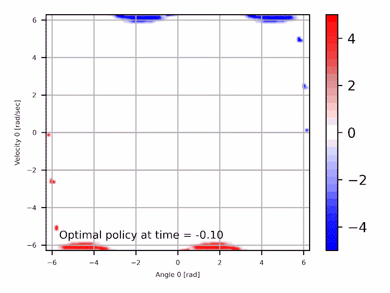
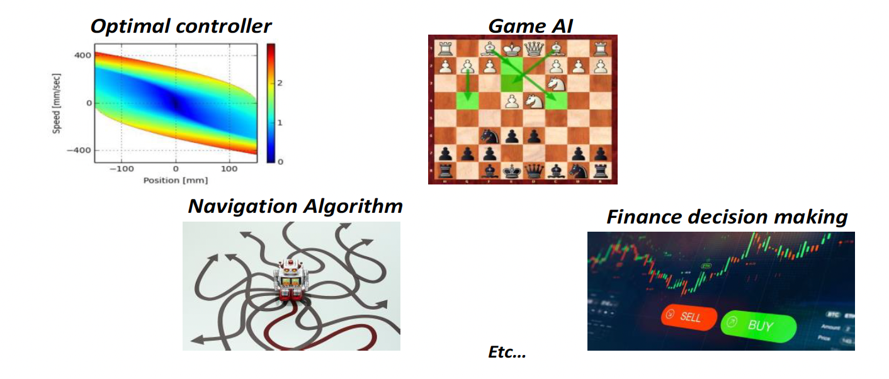

Préface
Pourquoi ce cours?
- Comprendre les fondements de l'apprentissage par renforcement et la commande optimale
- Faire les liens avec la science des asservissements;
- Apprendre à utiliser des algorithmes pour synthétiser des politiques optimales
"Du choix des forces dans un robot jusqu'au choix de la pièce à déplacer dans un jeu d'échec."
Cours à option à l'université de sherbrooke, typiquement offert à l'automne, sigle GRO860
Aperçu visuel


Introduction
Une approche unifiée pour la science de la prise de decision en temps réel.
Le but du cours est de faire le lien entre le domaine des asservissements et les algorithmes de décision basé sur l'IA. Le cours présentera les outils pour vous permettre de de traduire un problème de décisions en temps réel sous la représentation mathématique adapté pour synthétiser et optimiser une politique de décision, avec des applications dans plusieurs domaines de la robotique à la finance.
Ce cours présente les approches pour prendre des décisions intelligentes sous un cadre théorique unifié basé sur le principe de la programmation dynamique. Il vise d'abord a établir les liens entre les approches issues du domaine de l'ingénierie (la science des asservissements et la commande optimale) et les approches issues des sciences informatiques (recherche opérationnelle et l'apprentissage par renforcement) qui ont en fait les même bases mathématiques.
Plusieurs problèmes en apparence très différents, sont en fait des problèmes qu'on peut analyser et résoudre avec les mêmes outils mathématiques

Cibles de formation
À la fin de ce cours, vous serez en mesure de :
- Formuler un problème complexe de décision séquentielle en temps réel sour la forme d'un problème de commande optimale ou d'apprentissage par renforcement.
- Concevoir et optimiser une loi de commande ou une politique de décision intelligente en utilisant les algorithmes de solution adaptés.
- Évaluer la performance et la robustesse d'une politique de décision dans un environnement de simulation.
Déroulement du cours et Évaluation
Déroulement
Le cours combine des séances de cours théorique, des démonstrations algorithmiques et des laboratoires pratiques (Python/Gymnasium) pour mettre en œuvre les concepts d'apprentissage par renforcement.
Évaluation
L'évaluation repose sur des devoirs analytiques et de programmation (Python), un examen théorique mi-session et un projet final de session au choix de l'étudiant.
Guide du cours
Cette section présente les liens vers le matériel et les livrables semaines par semaines:
| Semaine | Matériel | Exercices | Livrables |
|---|---|---|---|
125 Août |
IntroductionFormulation du problème: fonction de coût, contraintes, politique, etc.
|
|
C.1.5 : Fonction de coût pour un pendule |
28 Sept |
Programmation dynamique
|
|
C.2.1 : Navigation optimale dans un graphe |
315 Sept |
Commande stochastique
|
|
C.3.1 Loi de commande pour une suspension active |
422 Sept |
Équation de Bellman et algorithmes
|
|
C.6.1 Gestion optimale d'un barrage |
529 Sept |
Laboratoire Pratique |
|
C.8.3 |
66 Oct |
Apprentissage par renforcement (Q-learning)
|
|
C.7.1 Q-learning pour une navigation optimale |
727 Oct |
Solution LQR
|
|
C.5.1 Solution LQR par dynamique |
83 Nov |
Approximation de fonctions
|
|
C.7.2 Q-learning approx. |
910 Nov |
Familles d'algorithmes |
- | Définition de projet |
1017 Nov |
Examen Théorique |
- | - |
11-12 |
Support projet |
- | - |
138 Déc |
Présentations finales |
- | Projet de session |